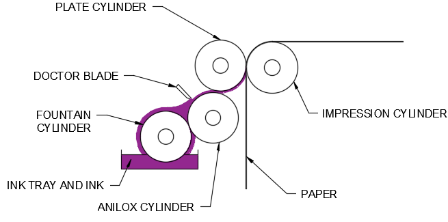

Printing
The following page of notes will cover:
- Offset lithography
- Flexography
- Screen printing
- Gravure printing
Offset lithography:
How it works:
- Digital files are broken down by colour separation
- The image is etched onto an aluminium plate for each colour, through a laser
- Each image plate is then loaded onto a plate cylinder
- The plate cylinder will dampen the non-image area of each file with water
- A vegetable oil-based paint solution will then be added successively to the plate to imprint the colour
- The plate cylinder will transfer the colour to another cylinder which is equipped with a rubber blanket that will print it directly onto the paper
| Advantages | Disadvantages |
|---|---|
|
|
Uses: Books, business forms, magazines, posters
Flexography:

How it works:
- The plates are normally made of plastic, polymer or rubber
- The plates have a raised surface image and are fixed or mounted onto printing cylinders
- Ink is applied through the fountain cylinder and anilox cylinder
- Applied ink can be evened out and cleaned using a doctor blade
- Each colour uses a different printing plate
| Advantages | Disadvantages |
|---|---|
|
|
Uses: Newspapers, comics, cartons, carrier bags
Screen printing:
How it works:
- A mesh screen stencil is created
- To create multi-coloured products, the printer must make multiple stencils for each colour
- The screen is then placed on the printing press
- The item or garment being printed is laid down flat onto the printing board, underneath the screen
- Ink is added to the top side of the screen, and a squeegee is used to pull the ink along the full length of the screen
- The printed product then passes through a dryer, which 'cures' the ink and creates a smooth, colourfast finish
| Advantages | Disadvantages |
|---|---|
|
|
Uses: Posters, display boards, textile T-shirts
Gravure printing:
How it works:
- The printing cylinder rotates in the ink pan where the engraved cells fill with ink
- As the cylinder rotates, excess ink is removed by the doctor blade
- The cylinder is brought into contact with the substrate, which is pressed against it by the rubber covered impression cylinder
- This results in the direct ink transfer of ink from the cells in the printing cylinder to the surface of the substrate
- As the printing roller rotates back into the ink pan, the printed area of the subsrate proceeds through a dryer and onto the next printing unit
| Advantages | Disadvantages |
|---|---|
|
|